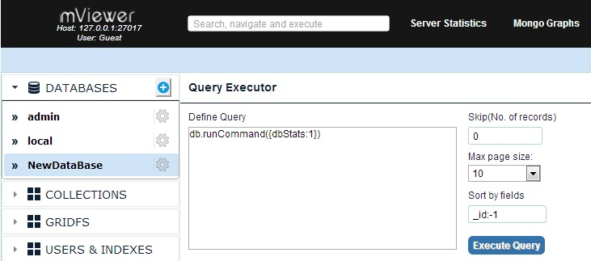
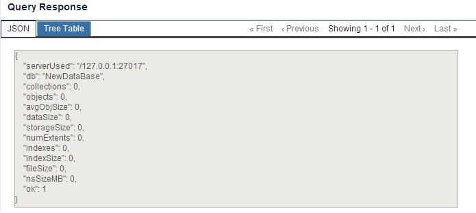

mViewer provides the facility of executing the queries right from it using Query Executor, thus eliminating the dependency on MongoDB terminal to execute the queries.
Query Executor displayed for a particular DB will also performs operations on other DB's or collections aswell..

